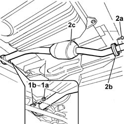

1076B14 EXHAUST PIPE WITH CATALYTIC CONVERTER - R R
- Path
- Procedures > 10 ENGINE UNIT > 1076 EXHAUST PIPES AND SILENCERS > 1076B EXHAUST PIPES AND SILENCERS > 1076B14 EXHAUST PIPE WITH CATALYTIC CONVERTER - R R
- Kind
- repair procedure (removal / refitting; the operation number is the code)
- Applies to
- engines: 2.8 JTD 8V; all production periods
- Interactive page
- https://sloeber94.github.io/elrnDB-fDct/en/#/244000885
Applies to: engines: 2.8 JTD 8V; all production periods
 Removing
Removing
 Refitting
Refitting1. Undo the bolts (1a) fixing the front catalyzer flange (1b).
2. Undo the bolts (2a) fixing the rear catalyzer flange (2b) and remove the exhaust pipe and catalyzer (2c).

Applies to: engines: 2.8 JTD 8V; all production periods
Refitting
Removing- Position the exhaust pipe and secure the front flange using the fastenings.
- Secure the rear flange using the fastenings.
- Check the torque of the fastenings for both flanges.
- Remove the vehicle from the lift.